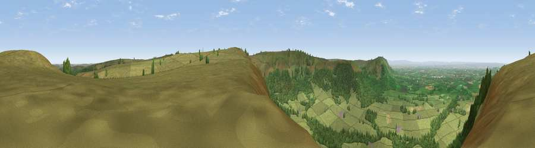

Viewpoint near Ingleby Greenhow
#3245 in England · top 13% of its area beats it · near Ingleby GreenhowWhere it is
The exact computed spot (NZ 60275 04625). Click the marker for map links.
The view, rendered

A 360° render of this exact spot computed from the terrain model, tree cover and land cover — summer colours, afternoon light, calibrated against photographs of famous viewpoints. Real trees, hedges and buildings will differ in detail.
The panorama
Grey silhouette: terrain skyline in each direction (720 bearings, Earth curvature and refraction included). Dashed green: skyline with trees (+15 m) and buildings (+8 m) as obstacles. Blue strip: how far the ground is visible on each bearing.
Where the view opens
Wedge length = distance to the farthest visible ground on that bearing (vegetation-aware). Rings at 10, 25 and 50 km.
What fills the view
64% grassland · 30% woodland · 5% cropland ·
Angular shares of the visible panorama (visual magnitude), not map area. Landscape diversity 0.37 (0–1 Shannon).
Key numbers
More beautiful places nearby
The staircase of upgrades: each row has a higher view potential than everything closer. Driving times are estimates from straight-line distance, calibrated against real road routing — check an actual route before setting out.
| Place | Direction | Drive | Score |
|---|---|---|---|
| Viewpoint near Ingleby Greenhow | N · 0 km | ~1 min | 76.0 |
| White Hill | WSW · 4 km | ~9 min | 84.2 |
| Viewpoint near Great Broughton | WSW · 4 km | ~9 min | 84.4 |
| Viewpoint near Kirkby | W · 7 km | ~14 min | 84.9 |
| Roseberry Topping | NNW · 8 km | ~17 min | 85.8 |
| Viewpoint near Lazenby | NNW · 14 km | ~26 min | 86.4 |
| Warsett Hill | NNE · 19 km | ~33 min | 86.8 |
| Viewpoint near Easington | NE · 21 km | ~35 min | 90.2 |
54.43348, -1.07231 · source: screening · position refined by local search. Computed location — check access rights before visiting.